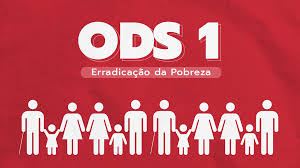
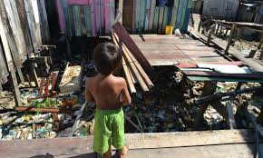

Explicação da ODS 1
A pobreza pode ser conceituada como a ausência de recursos monetários para a compra de bens e serviços essenciais para a sobrevivência. É um estado de miséria que causa sofrimentos por falta de alimentação e demais necessidades da vida cotidiana, como vestuário, alojamento e cuidados com a saúde. Estes problemas, caso não resolvidos, levam as pessoas à exclusão social e à incapacidade de participar ativamente da sociedade. Ou seja, não há condições de profissionalização adequada para o mercado de trabalho pela falta de acesso aos pilares essenciais da vida. É importante frisar que o conceito de pobreza possui várias camadas e passa por estudos recorrentes. O novo Índice Multidimensional de Pobreza, publicado em 2022, traz dados alarmantes a nível global e novos perfis de vulnerabilidade social. Toda a pesquisa foi elaborada pelo Programa das Nações Unidas para o Desenvolvimento – Pnud, e por meio da Iniciativa Oxford de Pobreza e Desenvolvimento Humano. Mesmo antes da pandemia da COVID-19, os dados já indicavam que 1,2 bilhão de pessoas em 111 países em desenvolvimento vivem em pobreza considerada como “multidimensional aguda”. Isso representa quase o dobro de pessoas que são enquadradas na definição de “pobres”, ou seja, sobrevivendo com menos de US$ 1,90 por dia. O estudo é visionário porque ele vai além da renda como um parâmetro da pobreza para realmente compreender como as pessoas vivenciam a vulnerabilidade social em todos os aspectos. Por exemplo: acesso à educação e saúde; moradia; água potável; saneamento; eletricidade; e assim por diante.
{kind=link}
{kind=link}
{kind=link}
No Brasil, o ODS 1 também está longe ser alcançada. As taxas de pobreza em nosso país registraram o maior nível em 2021, considerando os nove anos anteriores. Elaborado pelo Instituto de Pesquisa Econômica Aplicada (Ipea), o novo estudo foi publicado no final de janeiro deste ano. Em linhas gerais, o nível de pobreza ao ano saltou de 12,9% em 2012 para 15,7% em 2021. Outros dados também trazem um alerta quanto à realidade de crianças e adolescentes brasileiros. De acordo com pesquisa lançada pela Fundação Abrinq em março deste ano, cerca de 10,6 milhões de jovens com idades entre 0 e 14 anos vivem em extrema pobreza no país.  Ou seja, com renda domiciliar mensal per capita de até ¼ do salário-mínimo (parâmetro nacional que mapeia pessoas em condições extremamente vulneráveis). O número representa 24,1% das pessoas dentro desta faixa etária e, de 2020 a 2023, sofreu um aumento considerável de 38%. Isabela Mendes, cientista social e analista do Instituto Conecta Brasil, explica que a pobreza é um problema estrutural que afeta todas as esferas da sociedade. “No Brasil, o cenário se agravou devido à crise ocasionada pela pandemia da COVID-19, mas os dados já eram alarmantes antes mesmo deste período”.